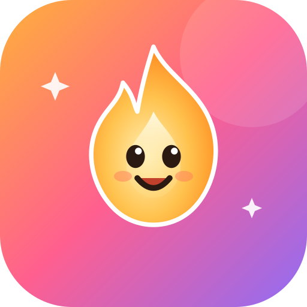

Gizlilik Politikası
Kısaca: Akılda hiçbir kişisel veri toplamaz, hesap açtırmaz, reklam ya da takip aracı kullanmaz. Çalışma ilerlemen yalnızca kendi cihazında durur.
Hangi veriler, nerede?
- Çalışma ilerlemen (hangi bilgileri gördüğün, tekrar tarihleri, seri, rozetler, deneme sonuçları) ve ayarların (isteğe bağlı adın, alanın, günlük hedefin) yalnızca cihazında saklanır. Bize ya da üçüncü bir tarafa gönderilmez.
- Adını girmek isteğe bağlıdır; yalnızca uygulamada sana seslenmek için cihazında kullanılır.
- Uygulamayı silersen bu veriler de silinir. Profil ekranındaki "Yedek indir" ile kendi yedeğini alabilirsin; yedek dosyası yalnızca senin seçtiğin yere kaydedilir.
Toplamadıklarımız
- Hesap, e-posta, telefon numarası, konum, kişiler, fotoğraflar.
- Kullanım analitiği, reklam kimliği, çerez ya da benzeri takip araçları.
Bildirimler
Günlük hatırlatmayı açarsan bildirim cihazının kendisi tarafından, senin seçtiğin saatte gösterilir. Bunun için sunucuya hiçbir bilgi gitmez.
Dış bağlantılar
Kartlardaki "Kaynak" ve "Asıl soruyu gör" bağlantıları Millî Eğitim Bakanlığının resmî sitelerindeki ders kitaplarını ve çıkmış soru kitaplarını tarayıcıda açar. Bu siteler kendi gizlilik politikalarına tabidir.
Paylaşım
"Arkadaşına meydan oku" ve "Karneyi paylaş" yalnızca sen dokunduğunda, cihazının paylaşım menüsünü açar. Paylaşılan bağlantıda yalnızca soruların kimlikleri, skorun ve istersen adın bulunur.
Çocukların gizliliği
Uygulama her yaştan kullanıcıya uygundur ve kimseden kişisel veri toplamaz.
İletişim
Sorular için destek sayfasını kullanabilirsin.